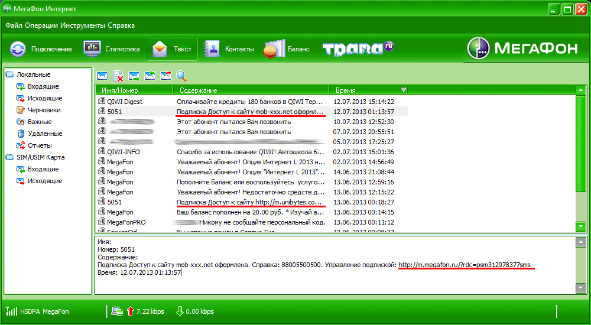
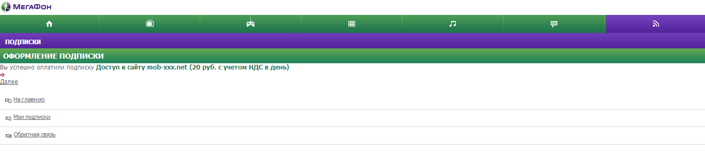
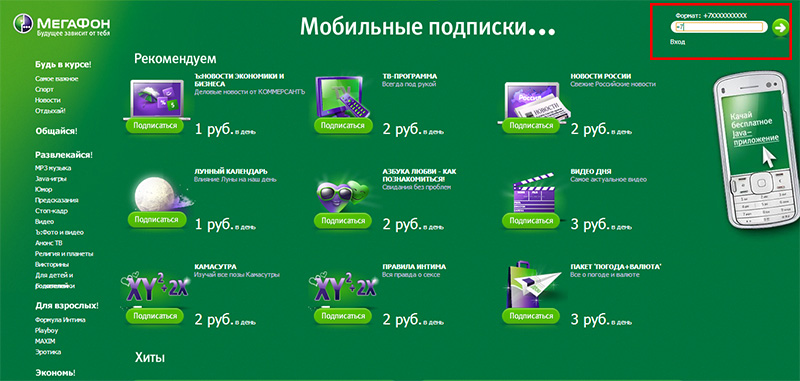
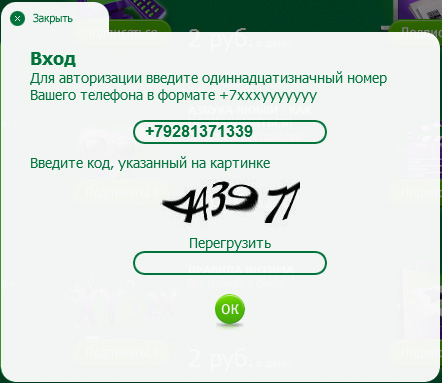
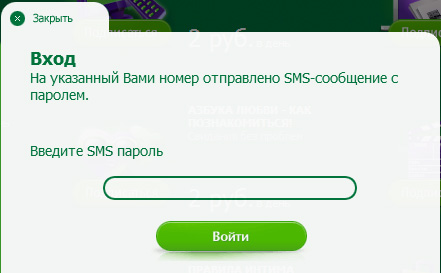
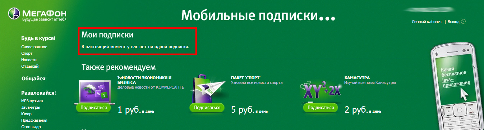

Если Вы читаете эту статью, значит понимаете, о чем идёт речь - о снятии средств со счёта Мегафона каждый день. Снимают по 7 и более рублей. Безжалостно. В статье я попробую рассказать как я отключал премиум WAP клики, и очень надеюсь, что она поможет всем, кто попался на эту афёру. Она будет наполнена злобой и ненавистью как к оператору связи, так и к мошенникам, ибо накипело. Давно была идея создать отдельный раздел на блоге с каким нибудь говорящим названием и писать о подобном. Ну что ж, начнём.
Эта фигня с WAP кликами может случиться не только с пользователями Мегафона, но и с МТС, Биллайн и прочими быдло связями в России. Такое ощущение, что операторы в сговоре с мошенниками, потому что отключиться от этих услуг вызывает трудности и занимает много времени.
Ладно бы нормально предоставляли все основные услуги связи, покрытии регионов и 3G (я уже не говорю о поколении сотовый сетей 4G, хотя бы старую 3G сеть нормально сделали бы!!!) интернета. Мало того, на фоне на редкость поганого интернета, операторы связи (я про Мегафон, не знаю как у других, но думаю та же песня) берут просто колоссальные тарифы за это.
Давайте посмотрим на 3G интернет тарифы для, как Мегафон говорит, компьютера в Ростовской области. Почти 500 (!!!) рублей на 10 Гб в месяц! На дворе 2013 год, мы еще мегабайты считаем! А как Вам разница в цене между интернет L и интернет XL? Казалось бы, что там эти 200 рублей, если прибавка аж 30 Гб! И в итоге ты всегда подключаешь за 790 рублей, потому что 20 Гб хватит только почту принять, да в контактике полазить.
Так, к чему это я всё. А к тому, что на фоне этих непомерных цен и ужасного качества предоставляемых услуг, операторы умудряются ещё воровать наши деньги путём подписок на всякие доступы к сайтам. И пожалуйста, по 10-20 рублей в день с каждого человека получается не хилая сумма.
Так вот, во второй раз, с утра (а я хочу почитать новости, почту, зайти на хабр перед работой) интернет оказался отключен. Смотрю баланс -5 рублей. И смс непрочитанная, что-то типа:
Подписка Доступ к сайту mob-xxx.net оформлена. Справка: 88005500500. Управление подпиской: http://m.megafon.ru/?rdc=psm312978377sms
Такое пару раз уже было, и что самое обидное, снимали каждый день по 7 рублей с телефона каждый день в течении, наверно, месяцев 3-4. И на фоне звонков я не замечал. Клал деньги и думал, почему так дорого звонить. Тогда я позвонил оператору Мегафона (вся эта процедура заняла минут 20) и мне отключили эту услугу.
Ну и когда это случилось второй и третий раз на сим 3G модема, который раздаёт интернет на весь дом, я и решил написать о том, как отказаться от подписки мегафона.

Шаг 1. Пополнить баланс
Прежде всего нужно пополнить баланс до положительного, чтобы интернет заработал. Я не пробовал отключать это с другого интернета, и мне кажется не очень это получится, исправьте меня если я не прав (как подсказали в комментариях, услугу можно отключить с любого компьютера, где есть доступ к интернету).
Короче говоря, интернет должен работать. Может придётся переподключить его, чтобы заработал. Все операции я производил с той СИМ карты, на которую подключена эта услуга доступа к сайту.
Шаг 2. Ищем полную версию сайта подписок
В сообщении мы видим ссылку, по которой, якобы, можно "управлять подпиской". Перейдя по этой ссылке, я так понял, что под управлением подпиской, компания Мегафон понимает только подключение к подпискам, но никак не отключение. Да и подписок там как то маловато. Собственно на рисунке ниже видно этот сайт во всей красе. Интернет для мобильных и для компьютера они значит делят, а сайт гавно что там, что там.

Естественно, в мобильной версии сайта, ссылки для перехода к обычной версии сайта нет (а зачем, ведь через мобильную невозможно отписаться от услуг), поэтому вбиваю в гугле "подписки мегафон" и перехожу по первой ссылке: http://www.podpiski.megafon.ru/. Вижу это:

Шаг 3. Отключаем подписки
Далее необходимо авторизоваться. Вверху справа ввожу номер телефона сим, на которой подключена эта сраная услуга в формате +7XXXXXXXXXX. Нажимаю на стрелку зеленую. Появляется всплывающее окно с капчей:

Ввожу капчу, нажимаю кнопку ОК. Должна прийти смс с кодом, который необходимо ввести в следующем поле:

Ввожу, нажимаю кнопку "Войти". Меня перенаправляет уже в личный кабинет, где мы видим, наши подписки:
Как написал Валерий в комментариях ниже, есть еще неприметная вкладка "Другие подписки". Ищите там тоже свои подписки.
Здесь, конечно, нажимаем кнопку отписаться. Появляется окно, в котором нас заботливо спрашивают, уверены ли вы в своём желании отписаться от столь полезной х*йни?

Значит, когда принудительно подписали меня на эту никому не нужную порнуху услугу доступа к сайту, вы не спрашивали моего согласия, и авторизовываться нигде не надо было, и капчи вводить не требовали! А теперь, значит, спрашиваете?
Жмём кнопку Да. Странно, что эту кнопку не сделали скользящей, чтобы она "убегала" от курсора мыши. В общем, после нажатия на кнопку Да, Вас должны отписать, и на страницу вы увидите, что подписок больше нет.

Спустя минут 10, пришла СМС об отключении услуги доступа к сайту.
Можно было вроде как отписаться путём отправки СМС, или позвонить оператору, но к СМС нет доверия, а к оператору... быстрей проделать все эти операции, чем дозвониться оператору.
В общем, нужно быть аккуратнее в сети, не лазить по подозрительным сайтам и быть внимательным, прежде чем на что-то согласиться в интернете.
Блокирование с помощью AdBlock Plus
В комментариях предложили способ, как предотвратить переходы на сайты, которые подключают эту услугу. Для этого нужно:
Как отключить перенаправления на подписки Мегафона.?
1. Установить расширение для браузера AdBlock Plus
2. Добавить в его персональные фильтры этот список:
http://ad.lidetds.net/*
http://fllowers4you.ru/*
http://pasvvord-icq.ru/*
http://worldoffer.ru/*
http://mediaground.org/*
http://pro-stats.ru/*
http://phoneteaser.me/*
http://reklamming.ru/*
http://k1noman.com/*
Заодно можно посмотреть на расширение для хрома “Мегафон-инфо”
Стоп-контент
Вроде как (сам еще не проверил) но можно навсегда отключить эти подписки, подключив бесплатную услугу "Стоп-контент". Ссылка с информацией на официальном сайте Мегафон: http://kavkaz.megafon.ru/services/content/stop-kontent/stop.html#porting
Марина написала:
В мегафоне можно подключить БЕСПЛАТНУЮ услугу Стоп-контент *105*381*3#, Услуга «Стоп-контент» позволяет абонентам блокировать голосовые вызовы, USSD-запросы, а также отправку SMS-сообщений на номера контент-провайдеров. Этот сервис поможет владельцам мобильных телефонов защитить себя от непредвиденных расходов, связанных с обращениями к платным «коротким» номерам. Услугой «Стоп-контент» могут воспользоваться абоненты всех тарифных планов Кавказского филиала сети «МегаФон».
Ребят, по другим регионам на сайте мегафона - «МегаФон»→ Услуги→ Услуги на коротких номерах→ Стоп-контент. ИЛИ через сервис-гид: Услуги и тарифы- изменение набора услуг - дополнительные услуги - галочка на “стоп-контент” и жмем “Изменить”.
Еще один комментарий на счет услуги "Стоп-контент" прислал Руслан:
у меня уже была активна услуга СТОП-КОНТЕНТ и отключен WAP - так вот получается, что и это не пугает наш мегафон - ответ был такой - возникли технические сбои в работе услуги. Что сделала оператор - обновила услугу СТОП - КОНТЕНТ , отключила подписку. Но как ты понимаешь деньги за контент при подключенной услуге СТОП-КОНТЕНТ мне никто даже не удасужился вернуть.
Незнайка в комментариях написал:
Ребята делается всё гораздо проще, хотя не могу согласиться очень хорошая статья. Для мобильных телефонов , да и для модемов просто набираете *505 решётка) вам придёт уведомление с подписками и пояснением как их отключить. Делаете соответствующий запрос, подтверждаете его аналогичным набором и “усё шеф”) надеюсь информация поможет.
UPD. Просьба написать в комментариях, на какую услугу Вы были подключены (или скопировать текст смс, информирующей о подключении услуги), чтобы эту статью могли найти другие люди с похожей проблемой.
UPD2. Если Вам помогла статья, то не забудьте поделиться ею в социальных сетях. Вдруг ещё у кого такая проблема.
UPD3. Я просто не мог не включить это в статью)))). Как "верно разоблачил" меня товарищ Дмитрий в комментариях:
Эту статью создал мегафон, чтоб жертвы мошенников(мегафона)не обращались с претензиями,чтоб мегафон вернул награбленное,а просто отписывались от подписок. Дела нужно доводить до конца,чтоб возвращали до копейки, и даже через суд!
Оказывается, принудительная подписка на сайты и снятие денежных средств у наших Российских операторов еще не самое плохое что могут делать операторы. Украинский оператор life допустил глупые ошибки, благодаря которым можно заполучить сим карту владельца.